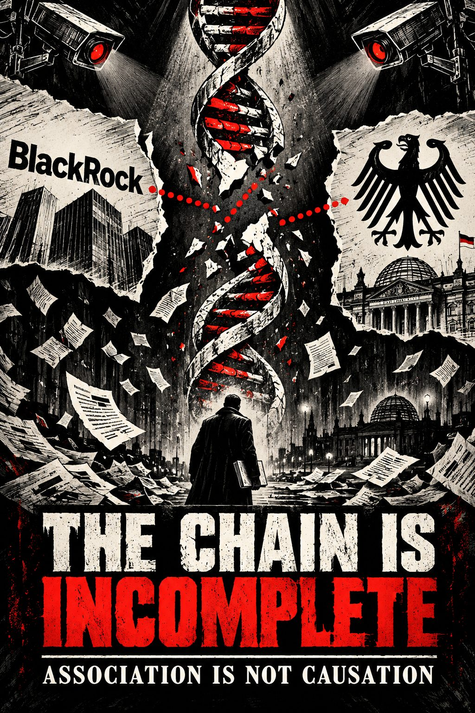
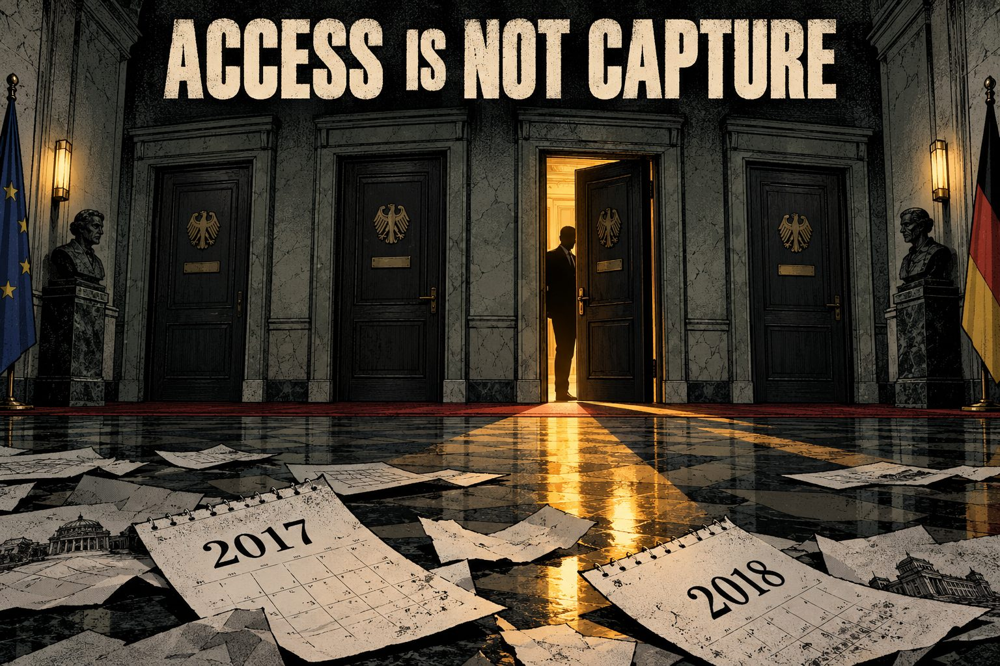
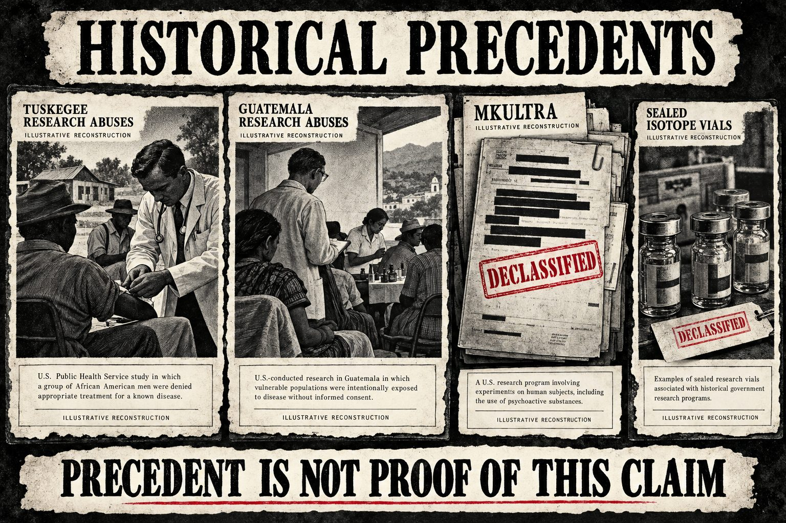

Evidence ChainSonderausgabe · Nr. 1 · Oktober 2026
Eine forensische Sonderausgabe
Folge dem Geld. Hör auf, wo das Papier aufhört.
Friedrich Merz, BlackRock, das Impfstoffgeld und die Behauptung, Körper seien im Verborgenen verändert worden. Was die Dokumente beweisen, was nicht, und warum die Lücke die eigentliche Geschichte ist.
Basierend auf den Dossiers von Project Evidence Chain · Jede Behauptung bewertet von A bis E

Beweiskette unvollständig ✕ Ohne Dokument kein Durchgang ✕ Beweiskette unvollständig ✕ Ohne Dokument kein Durchgang ✕ Beweiskette unvollständig ✕ Ohne Dokument kein Durchgang ✕ Beweiskette unvollständig ✕ Ohne Dokument kein Durchgang ✕ Beweiskette unvollständig ✕ Ohne Dokument kein Durchgang ✕ Beweiskette unvollständig ✕ Ohne Dokument kein Durchgang ✕
Merz leitet BlackRock-AufsichtsratM-01 · A
Trifft MinisterEC-09 · A
? Pharma-EntscheidungM-06 · C · kein Dokument
Pfizer + BioNTech finanzieren ImpfstoffF-01 · A
? Veränderter MenschB-01 · C · keine Probe
Die ganze Geschichte in einer Reihe. Hinter den durchgezogenen Gliedern stehen Primärdokumente. Hinter den gestrichelten steht bisher nichts. Die Beweis-IDs folgen dem Register im Anhang.
00
Hausregeln
Vorwort der Redaktion
Eins vorweg, bevor sich jemand an einer Verschwörung aufgeilt. Dieses Magazin hasst zwei Dinge gleichermaßen. Erstens Macht, die ihre Akten versteckt. Zweitens den faulen Mistkerl im Internet, der eine rote Linie zwischen zwei berühmten Namen zieht, ein Totenkopf-Emoji dazusetzt und das Journalismus nennt.
Beides ist dieselbe Krankheit. Beide behandeln ein Gefühl wie eine Tatsache. Mächtige Institutionen sagen „vertraut uns" und wollen, dass du aufhörst zu fragen. Die Netzwerkdiagramm-Händler sagen „ist doch offensichtlich" und wollen, dass du aufhörst zu prüfen. Wir machen weder das eine noch das andere.
Also, der Deal: Jede Behauptung in dieser Ausgabe trägt eine Note aus den Dossiers von Project Evidence Chain, auf denen sie beruht. Steht ein Primärdokument dahinter, siehst du es. Steht keins dahinter, siehst du das auch, in Rot, am Ende jedes Kapitels. Wir runden nie ein C zu einem A auf, nur weil es die bessere Schlagzeile wäre.
ABelegt. Primärquelle oder starke unabhängige Bestätigung. Darf als Tatsache formuliert werden.
BPlausibel, unbestätigt. Der Mechanismus ist möglich, der entscheidende Beweis fehlt.
CSpekulativ. Mögliche Erklärung ohne ausreichende Belege. Wird nie als Anschuldigung veröffentlicht.
EFiktion oder Symbol. Kulturell bedeutsam, beweist kein tatsächliches Ereignis.
Über der Skala steht eine Regel: Assoziation ist keine Kausalität, zeitliche Nähe ist kein Beweis, und Symbolik ist kein Beleg. Zwei Menschen im selben Gebäude stecken nicht in derselben Verschwörung. Ein passendes Datum ist ein Zufall, bis ein Dokument etwas anderes sagt.
Wir erfinden das fehlende Glied nicht. Wir zeigen auf das Loch und sagen dir genau, was es füllen würde.
Das ist keine Feigheit. Nur so werden die echten Befunde kugelsicher. Der belegte Teil dieser Geschichte ist hässlich genug: Ein Mann, bezahlt dafür, dem größten Vermögensverwalter der Welt Türen zu öffnen, ging durch eine Menge Regierungstüren, und das System war so gebaut, dass niemand aufschreiben musste, was gesagt wurde. Bläst man das mit Müll auf, schenkt man jeder PR-Abteilung in Berlin eine Gratis-Ausrede, alles abzutun.
01
Der Aufsichtsratsstuhl
Was Merz bei BlackRock tatsächlich tat, 2016 bis 2020
Illustration
Im März 2016 bekam Friedrich Merz, der frühere Unions-Fraktionschef, den Angela Merkel aus der ersten Reihe gedrängt hatte, einen neuen Job. BlackRock, der Vermögensverwalter mit mehr verwaltetem Geld, als die meisten Länder an Wirtschaftsleistung haben, machte ihn zum Vorsitzenden des Aufsichtsrats der BlackRock Asset Management Deutschland AG, seiner deutschen Gesellschaft. M-01 · A
So weit langweilige Unternehmensfakten. Interessant ist die zweite Hälfte der Ankündigung. BlackRock erklärte, Merz übernehme zusätzlich eine breitere Beraterrolle und pflege Beziehungen zu wichtigen Kunden, Aufsichtsbehörden und deutschen Regierungsstellen. M-02 · A Das Manager Magazin las das und nannte ihn, wofür er offensichtlich angeheuert wurde: Lobbyist. „Lobbyist" war nicht sein juristischer Titel. Aber wenn ein Unternehmen sagt, der Job eines ehemaligen Spitzenpolitikers sei die Pflege von Aufsehern und Regierung, braucht man kein Jurastudium, um zu verstehen.
Das ist ein Mann, der 2018, mitten im Rennen um den CDU-Vorsitz, sagte, er verdiene rund eine Million Euro im Jahr, und im selben Interview erklärte, er sehe sich als Teil der „gehobenen Mittelschicht". Das sagt einiges darüber, wie wohl er sich mit der Lücke zwischen Jobtitel und Job fühlte.
Was der Vorsitz ist und was nicht
Jetzt der Teil, den das Internet immer überspringt. Eine deutsche Aktiengesellschaft hat eine zweistufige Struktur. Der Vorstand führt das Unternehmen. Der Aufsichtsrat kontrolliert den Vorstand. Der Aufsichtsratsvorsitzende platziert keine Trades, führt keine Portfolios und wählt keine Aktien für Fonds aus. In derselben Ankündigung hieß es, COO Harald Klug verantworte das Tagesgeschäft. M-03 · D
Jedes Meme, das sagt „Merz war CEO von BlackRock", ist also falsch. Er war weder CEO von BlackRock Inc. noch von BlackRock Deutschland. M-04 · D Wer das wiederholt, ist kein Wahrheitskämpfer. Er ist die Person im Raum, die man am leichtesten diskreditiert.
Und die Rolle war auch kein reiner Titel. Zeitgenössische Berichte zeigen ihn bei Kundenveranstaltungen, darunter ein Brexit-Briefing mit dem ehemaligen britischen Schatzkanzler George Osborne, und in einer BlackRock-Delegation rund um Davos. M-05 · A Er hat den Job gemacht. Der Job war Zugang.
Er blieb sogar während seiner Kandidatur um den CDU-Vorsitz 2018 im Aufsichtsrat, die er gegen Annegret Kramp-Karrenbauer verlor, und gab den deutschen Vorsitz Ende März 2020 ab. Merk dir dieses Datum. Leute werden versuchen, ihm sehr viel Gewicht aufzuladen.
Das beweist
Merz leitete von März 2016 bis März 2020 den Aufsichtsrat der deutschen BlackRock-Gesellschaft.
Sein Auftrag umfasste ausdrücklich Beziehungen zu Kunden, Aufsicht und Regierung.
Er war aktiv bei Kunden- und Netzwerkveranstaltungen.
Das beweist nicht
Dass er BlackRock führte, in Deutschland oder anderswo.
Dass er irgendeine Anlage auswählte, in Pharma oder sonst wo.
Dass seine Beziehungen eine Regierungsentscheidung veränderten.
Offene Lücke: Es liegt kein beglaubigter Handelsregisterauszug, keine Satzung und kein Aufsichtsratsprotokoll für 2016–2020 vor. Die Rolle ist durch zeitgenössische Quellen gut bestätigt, seine genauen gesellschaftsrechtlichen Befugnisse sind aber noch nicht rekonstruiert.
02
Das Geld, das es wirklich gab
Woher das Impfstoffgeld tatsächlich kam
Illustration
Wer wissen will, wer den Impfstoff von Pfizer und BioNTech bezahlt hat, braucht keinen Whistleblower. Er braucht eine Pressemitteilung, einen Kontoauszug und etwas Geduld. Die Geldspur ist öffentlich, und sie läuft nicht über BlackRock.
Merz wird Aufsichtsratsvorsitzender der BlackRock Asset Management Deutschland AG.
Vier berichtete Treffen mit hochrangigen Bundesvertretern in seiner BlackRock-Funktion (Kapitel 04).
Pfizer und BioNTech kündigen ihre COVID-19-Impfstoffkooperation an.
Merz gibt den Vorsitz bei BlackRock Deutschland ab.
Pfizer veröffentlicht die Finanzkonditionen.
Das Paul-Ehrlich-Institut genehmigt BioNTechs erste deutsche Studie. Seine FAQ nennt den 20. April, die öffentliche Mitteilung ist auf den 22. April datiert.
Die Europäische Investitionsbank vereinbart bis zu 100 Mio. € Fremdfinanzierung mit BioNTech.
Die große Phase-2/3-Studie läuft.
Bundesförderung von bis zu rund 375 Mio. € für BioNTech.
Die EMA empfiehlt die bedingte Zulassung von Comirnaty.
Merz wird Bundeskanzler.
Gelbe Punkte sind Merz-Ereignisse. Man sieht, wie wenig sich die beiden Spuren berühren: eine Überschneidung von etwa zwei Wochen im März 2020.
Pfizer an BioNTech
Am 9. April 2020 teilte Pfizer mit, BioNTech vorab 185 Mio. $ zu zahlen, davon rund 113 Mio. $ als Kapitalbeteiligung, plus bis zu 563 Mio. $ an möglichen Meilensteinzahlungen. Die Entwicklungskosten sollten am Ende 50/50 geteilt werden, aber Pfizer streckte während der Entwicklung 100 % vor, BioNTech sollte seinen Anteil später zurückzahlen. F-01 · F-02 · F-03 · A Das steht direkt in Pfizers eigener Pressemitteilung von damals.
Brüssel an BioNTech
Am 11. Juni 2020 unterzeichnete die EIB eine Vereinbarung über bis zu 100 Mio. € Fremdfinanzierung für das BNT162-Programm und den Ausbau der Produktion, ausgezahlt in zwei Tranchen zu je 50 Mio. €, gekoppelt an Meilensteine. F-04 · A Eine europäische öffentliche Bank, dokumentiert auf ihrer eigenen Website.
Berlin an BioNTech
Im September 2020 sagte die Bundesregierung bis zu rund 375 Mio. € zu. Das ist breit berichtet, aber der Original-Förderbescheid des BMBF wurde für das Dossier nicht beschafft, daher bleibt es bei B, bis jemand die eigentlichen Unterlagen holt. F-05 · B*
Und den Rest zahlte die Öffentlichkeit
Zoomt man heraus, wird das Bild für die Fraktion „Wall Street hat den Impfstoff gebaut" noch peinlicher. Eine BMJ-Studie von 2023 fand, dass die öffentlichen US-Investitionen in mRNA-COVID-19-Impfstoffe mindestens 31,9 Mrd. $ erreichten. Eine Studie in JAMA Network Open fand, dass öffentliche Geldgeber die meisten 2020–2021 gestarteten registrierten COVID-19-Studien der Phasen 1–3 finanzierten, vor der Industrie. Vor der Pandemie waren die größten Eigentümer von BioNTech das Family Office der Strüngmann-Brüder, kein Indexfonds.
Der Impfstoff wurde mit Firmengeld und einem Berg öffentlicher Mittel gebaut. Der Vermögensverwalter besaß Konzertkarten. Die Musik hat er nicht geschrieben.
Die Studie selbst hat einen Sponsor, und der steht in den FDA-Unterlagen: Pfizer und BioNTech. Das Briefing des FDA-Beratergremiums vom Dezember 2020 beschreibt eine randomisierte, placebokontrollierte Phase-2/3-Studie mit rund 44.000 Teilnehmenden. BlackRock taucht in keinem Sponsor- oder Protokolldokument auf. T-01 · AT-02 · C
Das beweist
Pfizer streckte die Entwicklungskosten vor und beteiligte sich mit ~113 Mio. $ an BioNTech.
Die EIB lieh bis zu 100 Mio. €, der Bund gewährte bis zu ~375 Mio. €.
Pfizer und BioNTech waren Sponsoren der Studie.
Das beweist nicht
Irgendeine BlackRock-Finanzierung von BNT162.
Irgendeine Rolle von Merz in diesen Deals.
Überhaupt etwas aufgrund der Kalenderüberschneidung im März 2020.
Offene Lücke: Der Original-Förderbescheid des BMBF und die Auszahlungsakte der EIB (Meilensteine → Zahlungsdaten → Arbeitspakete) liegen nicht vor.
03
Die 13F-Illusion
Warum „BlackRock hielt Pfizer" weniger bedeutet, als du denkst
Hier verliert die Netzwerkdiagramm-Fraktion endgültig den Faden. Jemand ruft eine Beteiligungsgrafik auf, sieht BlackRock oben auf Pfizers Aktionärsliste, sieht Merz' Namen neben BlackRock und verbindet die Punkte. Fall gelöst, oder?
Falsch. Lesen wir das tatsächliche Dokument.
Ein Form 13F ist eine Quartalsmeldung großer US-Vermögensverwalter an die SEC, in der sie gemeldete Aktienpositionen auflisten. BlackRocks kombinierte Meldung für 2020 nennt die BlackRock Asset Management Deutschland AG in München unter den einbezogenen Managern. EC-07 · A So weit, so verbunden.
Aber dieselbe Meldung sagt im Klartext, dass BlackRock, Inc. eine Muttergesellschaft ist, die über Positionen ihrer operativen Tochtergesellschaften kein Anlageermessen ausübt. Sie meldet sie, weil sie meldepflichtig ist, nicht weil sie sie ausgewählt hat. EC-08 · A
Die 13F-Meldung sagt selbst, dass die Mutter die Aktien nicht ausgewählt hat. Wer damit immer noch beweisen will, dass Merz das Impfprogramm steuerte, kann nicht lesen oder will nicht.
Die Zahlen, mit Warnhinweis
Strukturierte Drittanbieter-Seiten, die 13F-Daten darstellen, zeigen diese Positionen. Sie müssen gegen die zugrunde liegenden SEC-Zeilen geprüft werden, bevor jemand sie für rechtliche oder Eigentumsaussagen verwendet. EC-11 · A (wie gemeldet)
Wertpapier
Meldende Einheit
Datum
Aktien
Gemeldeter Wert
BioNTech (BNTX)
BlackRock Finance, Inc.
31.12.2020
668.546
54,5 Mio. $
Pfizer (PFE)
BlackRock Finance, Inc.
30.09.2020
414.768.435
15,22 Mrd. $ (7,3 %)
Unterschiedliche Stichtage. Nicht addieren und nicht als eine Momentaufnahme behandeln. Quelle: PortfolioSavvy-Darstellung von SEC-13F-Daten; die Primärmeldungen sind noch zu prüfen.
Schau dir diese Zahlen kurz an. Eine Pfizer-Position von 15 Milliarden Dollar ist das, was herauskommt, wenn man einen großen Teil der weltweiten Indexfonds verwaltet und Pfizer eines der größten Unternehmen im Index ist. Das ist gewöhnliches Portfolio-Exposure, und es ist die erste alternative Erklärung, die jeder ehrliche Ermittler ausschließen muss. Die BioNTech-Position, rund 54 Millionen Dollar Ende 2020, ist für ein Haus dieser Größe ein Rundungsfehler.
Fünf getrennte Behauptungen, die sich als eine ausgeben
Das Meme verkauft das als eine Tatsache. Es sind fünf, und jede braucht ihr eigenes Dokument:
Ein BlackRock-Fonds hielt Pfizer- oder BioNTech-Aktien Gemeldet
Merz wählte diese Aktien aus Kein Dokument
Das Geld floss an Pfizer oder BioNTech Kein Dokument
Dieses Geld bezahlte eine bestimmte Studie Kein Dokument
Merz kontrollierte die Studie Kein Dokument
Am dritten Glied bricht es am heftigsten. Kauft ein Fonds Aktien an der Börse, geht das Geld an den Verkäufer der Aktien, nicht an das Unternehmen. Um zu zeigen, dass BlackRock Forschung finanzierte, bräuchte man eine Kapitalerhöhung, einen Kredit, ein Underwriting-Mandat oder einen Projektvertrag. Für BNT162 hat niemand so etwas gefunden. F-06 · CH-02 · C
Das beweist
BlackRocks deutsche Gesellschaft war Teil der 13F-Konzernmeldung.
Es gab von BlackRock gemeldete Positionen in Pfizer und BioNTech zu den genannten Stichtagen.
Das beweist nicht
Wer die Positionen auswählte oder warum.
Dass sie BlackRocks eigenes Kapital waren.
Dass davon Forschung finanziert wurde oder Merz etwas damit zu tun hatte.
Offene Lücke: Eine Rekonstruktion Quartal für Quartal von 2016 bis 2021 aus EDGAR-13F, N-PORT und Fondsberichten, eingeordnet als passiver Index, aktive Auswahl, institutionelles Mandat oder nicht feststellbar. Bis dahin verwirrt jede große „BlackRock besitzt X"-Zahl mehr, als sie enthüllt.
04
Zugang ist nicht Vereinnahmung
Die Treffen und die Protokolle, die niemand führen musste

Illustration
Jetzt kommen wir zu dem Teil, der dich wirklich ankotzen sollte.
Im Januar 2019 berichtete der Spiegel unter Berufung auf eine dpa-Meldung zur Antwort der Bundesregierung auf eine parlamentarische Anfrage, dass Merz in seiner BlackRock-Funktion viermal hochrangige Bundesvertreter getroffen habe. EC-09 · A
Datum
Wer
Berichteter Kontext
17.10.2017
Sigmar Gabriel, Außenminister und Vizekanzler
Merz als Aufsichtsratsvorsitzender der deutschen BlackRock-Tochter
07.03.2018
Sigmar Gabriel
Gleiche Funktion
26.04.2018
Helge Braun, Chef des Kanzleramts
Am Rande einer Präsidiumssitzung des CDU-Wirtschaftsrats
12.09.2018
Finanzminister Olaf Scholz und Staatssekretär Jörg Kukies
„Finanzmarktfragen"
Eine spätere Regierungsantwort, Bundestagsdrucksache 19/18436, ergänzt: eine Diskussion der Konrad-Adenauer-Stiftung mit Peter Altmaier am 12. Dezember 2018 zu „allgemeinen Themen", ein Telefonat mit Kukies am 21. Januar 2020 und ein Gespräch Merz–Kukies über „aktuelle Finanzmarktfragen" am 20. März 2020. Keiner dieser Einträge nennt BioNTech, Pfizer oder ein Pharmathema.
„Allgemeine Themen." „Finanzmarktfragen." Das ist die gesamte öffentliche Aufzeichnung dessen, was der Mann des größten Vermögensverwalters der Welt in Deutschland mit den Leuten besprach, die das Land regieren. Keine Protokolle. Keine Vermerke. Eine Themenzeile, die auf eine Serviette passt.
Der Skandal ist kein geheimer Impfstoffplan. Der Skandal ist, dass das System so gebaut war, dass niemand etwas aufschreiben musste.
Das Register, das zu spät kam
Das Lobbyregistergesetz ist vom 16. April 2021 datiert und trat am 1. Januar 2022 in Kraft. Der erste Registereintrag der BlackRock Asset Management Deutschland AG ist auf den 14. März 2022 datiert. Fast zwei Jahre, nachdem Merz gegangen war. EC-10 · als Zeitbehauptung widerlegt Das Register kann also nicht sagen, was er tat, und sein Schweigen über 2016–2020 beweist in keine Richtung etwas. Das EU-Transparenzregister wurde für direkte Kontakte erst 2021 faktisch verpflichtend.
Für die Jahre, auf die es ankommt, verlangten die Regeln die Papierspur nicht, die man bräuchte. Das ist die eigentliche Anklage. Nicht gegen einen Mann, sondern gegen eine politische Kultur, die einen ehemaligen Fraktionschef für einen Finanzgiganten durch die Flure ziehen ließ und eine einzeilige Themenangabe Transparenz nannte.
Wir prüfen unsere eigene Wut
Jetzt das kalte Wasser, wie versprochen. Ein Treffen ist keine Entscheidung. Eine Themenzeile ist keine Politikänderung. Kein Dokument zeigt, dass ein Amtsträger eine BlackRock-Position übernahm oder wegen Merz eine Entscheidung änderte. M-06 · CEC-12 · nicht belegt Ein Recherchevermerk im Dossier suchte gezielt nach einer Verbindung zwischen seiner BlackRock-Rolle und deutschen Konsultationen zur Pharmapolitik und fand keine. Gefunden wurde nur sein viel früherer, bekannter Auftritt bei einer arbeitgebernahen Liberalisierungsveranstaltung 2003.
Das beweist
Merz hatte in seiner BlackRock-Funktion wiederholt Zugang auf höchster Regierungsebene.
Die öffentliche Aufzeichnung dessen, was gesagt wurde, ist fast leer.
Das Lobbyregister existierte noch nicht.
Das beweist nicht
Was tatsächlich gesagt wurde.
Dass sich deshalb eine Politik änderte.
Irgendein Pharma- oder Impfstoffthema.
Offene Lücke: Die zugrunde liegende Bundestagsanfrage und -antwort sowie Ministeriumskalender, Besucherlisten, Gesprächsvorbereitungen und Korrespondenz vom 1. März 2016 bis 31. März 2020. Das ist einen IFG-Antrag entfernt. Siehe Kapitel 08.
05
Das hässlichste Gerücht
Wir haben es geprüft, damit du es nicht wiederholen musst
Irgendwo in diesem Ökosystem kursiert die Geschichte, ein anonymer Zeuge behaupte, Merz sei zusammen mit den BioNTech-Gründern Uğur Şahin und Özlem Türeci an „Experimenten an Menschen" beteiligt gewesen. Wir sind ihr nachgegangen.
Es gibt keine Originalaussage. Keine Aufnahme. Kein Datum, keinen Ort, kein benanntes Opfer, kein Protokoll, kein Dokument. Nichts.
Was die Akten zeigen, ist öffentlich und ehrlich gesagt banal. Als Kanzler hielt Merz die Laudatio, als Şahin und Türeci am 10. Juni 2025 in Berlin den Deutschen Nationalpreis erhielten. Am 9. Dezember 2025 besuchte er das von ihnen mitgegründete Forschungsinstitut TRON in Mainz und sagte, er habe schon mehrfach mit ihnen über ihre Arbeit gesprochen. Das ist ein Politiker, der berühmte Wissenschaftler ehrt und Biotech unterstützt. Das macht jeder Regierungschef.
Das Studiensystem, das er angeblich gesteuert haben soll, ist dagegen in die Gegenrichtung dokumentiert. Das PEI genehmigte die deutsche Studie nach einer Nutzen-Risiko-Bewertung und verlangt ein zustimmendes Votum der Ethikkommission. Die Studieneinträge verlangen eine unterschriebene Einwilligung vor jeder Studienmaßnahme. Das beweist nicht, dass jede Einwilligung an jedem Standort perfekt war. Aber es ist eine Papierspur, und das Gerücht hat keine.
Ein Detail sollte man prüfen statt herausschreien: Laut PEI dauerte die erste Prüfung von BioNTechs Antrag vier Arbeitstage, erklärt durch zusätzliches Personal, Vorabberatung und vorab bewertete Unterlagen. Schnell ist nicht dasselbe wie betrügerisch. Prüfen lässt sich das mit der Prüfakte, nicht mit einem Bauchgefühl.
Das Urteil des Dossiers: 95 % Konfidenz, dass die Anschuldigung durch keinerlei öffentliche Belege gestützt wird. Das heißt nicht, dass nirgendwo je etwas Schlimmes passiert ist. Es heißt, dass genau diese Anschuldigung überhaupt keine Grundlage hat. keine Bestätigung
Eine anonyme Anschuldigung medizinischer Verbrechen gegen einen namentlich genannten Menschen, ohne jede Einzelheit, ist keine Spur. Sie ist ein Haftungsrisiko.
Offene Lücke: Falls es den Zeugen gibt, beginnt alles mit dem Originalmaterial: vollständige Aussage, Herkunft, Datum, konkrete Maßnahme, Ort, mutmaßliches Opfer und woher der Zeuge es weiß. Ohne das lässt sich die Behauptung nicht prüfen, und sie sollte nur als unbestätigt gedruckt werden.
06
Die biologische Behauptung
„Man hat etwas in meine DNA eingebracht." Wie man es wüsste.
Das ist der Teil, den Menschen im eigenen Körper spüren, also verdient er den meisten Respekt und den härtesten Maßstab. Die Behauptung in ihrer schärfsten Form: Die DNA eines Menschen wurde ohne Einwilligung verändert, vielleicht mit nichtmenschlichem Erbgut, vielleicht als Teil eines Programms.
Und hier kommt, was fast niemand laut sagt: Das ist eine der am besten prüfbaren Behauptungen in dieser ganzen Geschichte. Ein Treffen kann aus den Akten verschwinden. Ein Gespräch kann ohne Protokoll bleiben. Aber DNA ist ein Text aus rund drei Milliarden Buchstaben. Hat jemand ein fremdes Kapitel eingeklebt, kann man im Prinzip auf die Buchstaben zeigen, auf die Naht, an der menschliche Sequenz in fremde übergeht, und auf die genaue Stelle im Chromosom.
Bisher wurde in keinem der Dossiers fallbezogenes Material dieser Art vorgelegt. Kein Sequenzierergebnis, kein Pathologiebefund, keine Behandlungsakte, keine Studien-ID, keine Chargennummer, keine Vektorsequenz, keine Integrationsstelle. B-01 · C Das heißt nicht, dass unerklärte Beschwerden nicht echt sind oder keinen Arzt verdienen. Es heißt, dass die Hypothese bei C steht, bis es Material zum Prüfen gibt.
Was die Wissenschaft sagt, ohne Spin
Genetische Veränderung beim Menschen ist real. Casgevy, eine CRISPR-Therapie, die die eigenen blutbildenden Stammzellen eines Patienten außerhalb des Körpers verändert, erhielt am 9. Februar 2024 die EU-Zulassung. Mensch-Tier-Chimären-Embryonen wurden im Labor erzeugt, 2017 in Cell veröffentlicht, 2021 folgte Primatenforschung. Nichts davon ist Science-Fiction. A
Aber all das geschieht offen, mit Einwilligungsformularen, Ethikkommissionen, Registern und veröffentlichten Studien. Und eine Chimäre bedeutet verschiedene Zellen nebeneinander, nicht tierische Gene in menschliche Chromosomen gespleißt. Worte zählen hier.
Zu mRNA-Impfstoffen konkret: Die EMA beschreibt, dass die mRNA von Comirnaty Zellen vorübergehend Anweisungen gibt und dann abgebaut wird. Eine Laborstudie von 2022 (Aldén et al.) fand impfstoffabgeleitete DNA in einer menschlichen Leberzelllinie in der Schale und schrieb ausdrücklich, dass unbekannt sei, ob sie ins Genom integrierte. Große Übersichtsarbeiten sagen, dass mRNA wirkt, ohne in den Zellkern zu gelangen. „Ein Produkt enthält genetisches Material" ist nicht dasselbe wie „das Genom des Empfängers wurde verändert". Für Letzteres braucht es direkte genomische Belege. Sonst zählt nichts.
Die Fallen
Ein einzelner Sequenzier-Read, der nach Tier, Bakterium oder Virus aussieht, beweist nichts. Labore sind voller nichtmenschlicher DNA. Dein Körper ist voller Mikroben. Sequenzierer erzeugen Artefakte; ein bekanntes Artefakt auf manchen Illumina-Geräten imitiert sogar Mutationen mit niedriger Frequenz. Ein einzelner seltsamer Read ist der Anfang einer Untersuchung, nicht ihr Ende. B-02 · D Symptome allein können kein DNA-Spleißen beweisen. Und selbst ein echter, bestätigter Befund würde nicht zeigen, wer es war. B-03 · D
Offene Lücke: Alles. Eine Krankenakte zum fraglichen Ereignis, ein biologisch sinnvolles Gewebe, Sequenzierung, eine Mensch-Fremd-Übergangsstelle, orthogonale Validierung und ein zweites unabhängiges Labor. Kapitel 08 enthält das vollständige Protokoll.
07
Das Archiv der echten Gräuel
Wie echte Programme ohne Einwilligung aussehen, wenn die Akten aufgehen

Illustrative Rekonstruktionen, keine Archivfotos.
Wer dir erzählt, „Institutionen würden so etwas nie tun", lügt oder hat keine Ahnung. Sie haben es getan. Wiederholt. Und wir wissen genau, woher wir es wissen.
Tuskegee, 1932–1972. Der US Public Health Service sah vierzig Jahre lang zu, wie schwarze Männer mit Syphilis unbehandelt blieben, ohne informierte Einwilligung, und enthielt ihnen wirksame Behandlung vor, als es Penicillin längst gab. Die CDC dokumentiert das auf ihrer eigenen Website.
Guatemala, 1946–1948. US-finanzierte Forscher infizierten Gefangene, Soldaten und Psychiatriepatienten absichtlich mit Geschlechtskrankheiten, ohne Einwilligung. Eine andere, aktivere Form des Missbrauchs als Tuskegee.
Die Strahlenexperimente. Offizielle US-Archive dokumentieren Patienten, denen Plutonium oder Uran injiziert wurde, ohne überzeugende Belege, dass sie wussten, dass sie Versuchspersonen waren. In einer Korrespondenz wurde empfohlen, bestimmte Plutoniumdaten aus Krankenhausakten herauszuhalten.
MKUltra. Das Gedankenkontrollprogramm der CIA. Direktor Richard Helms ließ die Akten 1973 vernichten. Der Senat hielt 1977 trotzdem eine Anhörung ab, weil rund 20.000 Seiten Finanz- und Verwaltungsunterlagen im falschen Aktenschrank überlebt hatten.
Macht tut Ungeheuerliches. Genau deshalb brauchen Anschuldigungen Beweise: Die echten Monster wurden mit Papier überführt.
Schau, wie jeder dieser Fälle bewiesen wurde. Nicht durch einen Film, der ähnlich aussah. Nicht durch ein Gefühl. Durch Protokolle, Teilnehmerlisten, Finanzunterlagen, Korrespondenz, Zeugenaussagen und offizielle Untersuchungen. Selbst MKUltra, wo absichtlich geschreddert wurde, flog durch Dokumente auf, die den Schredder überlebt hatten.
Und diese Skandale haben etwas Reales gebracht: den National Research Act, den Belmont-Bericht, Ethikkommissionen und informierte Einwilligung als Gesetz. Die Werkzeuge, mit denen wir heute Behauptungen wie die in dieser Ausgabe prüfen, gibt es weil Menschen diese Akten ans Licht gezerrt haben.
Geschichte schneidet also in beide Richtungen. Sie erledigt „das würden die nie tun". Sie erledigt auch „Tuskegee ist passiert, also ist meine Theorie bewiesen". Beides folgt nicht. Die richtige Lehre passt auf einen Aufkleber: Macht verdient Kontrolle, und Anschuldigungen verdienen Beweise.
Dasselbe gilt für Kultur. Frankenstein, Doktor Moreau, Jurassic Park, Gattaca, BioShock: großartige Geschichten, nützliche Metaphern, manchmal gute Quellen für Fragen. Sie sind keine Patientenakten, keine Sequenzdaten und keine Finanzierungsverträge. C-01 · E
Offene Lücke: Für die heutigen Behauptungen in dieser Ausgabe gibt es noch kein vergleichbares Primärmaterial. Kein Protokoll, keine Teilnehmerliste, keine Finanzunterlage, keine offizielle Zeugenaussage.
08
Was es wirklich beweisen würde
Ein Feldhandbuch für alle, die die Lücken schließen wollen
Illustration
Genug davon, was fehlt. Hier steht, wie man es holt. Nichts davon braucht einen Hacker oder ein Leak. Es braucht Briefe, Formulare und Sturheit.
Spur eins: die institutionelle Kette
Um Einfluss zu beweisen, braucht man sechs Glieder, jedes auf Papier: (1) den tatsächlichen Fonds und Manager, der ein Wertpapier hielt; (2) das Mandat und wer Handels- oder Stimmrechte hatte; (3) Kommunikation oder Anweisungen einer namentlich genannten Person; (4) die konkrete Forschungs-, Zulassungs-, Politik- oder Beschaffungsentscheidung; (5) die zuständige Institution und den Entscheider; und (6) zeitgenössische Belege, dass das Verhalten der Person die Entscheidung veränderte. Bricht ein Glied, wird die Behauptung schwächer. Findet man alle sechs, hat man eine Geschichte, die niemand mehr totkriegt.
Vorlage · Antrag nach dem Informationsfreiheitsgesetz (IFG)
Getrennt an Bundeskanzleramt, Finanzministerium und Wirtschaftsministerium schicken, per E-Mail oder Brief. Eng schlägt breit. „Gebt mir alles über BlackRock" führt ins Leere.
Alle Kalendereinträge, Besucherregistrierungen, Gesprächsvermerke und Korrespondenz zwischen dem 1. März 2016 und dem 31. März 2020, in denen Friedrich Merz in seiner Funktion für die BlackRock Asset Management Deutschland AG vorkommt.
Dann: Handelsregister und Bundesanzeiger für Aufsichtsratsstruktur und Jahresabschlüsse; EDGAR für jede 13F-, N-PORT- und 13G-Meldung von 2016 bis 2021; historische Daten des EU-Transparenzregisters und Kalender der Kommissare (GD FISMA, GD COMP, GD SANTE); und das Projektregister der EIB für den BioNTech-Kredit.
Spur zwei: die biologische Kette
Für alle, die glauben, dass ihnen das passiert ist: Die Reihenfolge zählt mehr als das Budget. Fang mit der Akte an, nicht mit einem DNA-Test aus dem Internet.
Fordere deine vollständige Krankenakte zum fraglichen Ereignis an: Medikations- und Verabreichungsprotokolle mit Chargennummern, Einwilligungen, OP- und Narkoseberichte, Pathologie, eventuelle Studien-ID. Bitte um Dokumente, nicht um Geständnisse. Schritt eins
Geh zu einem klinischen Genetiker an einem anerkannten Zentrum. In Belgien ist das Zentrum für Humangenetik der UZ Leuven eines von acht anerkannten Zentren, nach ISO 15189 akkreditiert. Frag, welches Gewebe aussagekräftig wäre. Schritt zwei
Short-Read-Ganzgenomsequenzierung für den breiten Blick; Long-Read-Sequenzierung, um strukturelle Veränderungen zu überbrücken und eine Mensch-Fremd-Übergangsstelle zu finden. Labor
Jeden Kandidaten mit Junction-PCR, Sanger-Sequenzierung und ddPCR bestätigen. Eine Methode allein beweist nichts. Validieren
Ein zweites, unabhängiges Labor mit einer eigenen, separat versiegelten Probe und protokollierter Beweiskette. Replizieren
Erst dann: die Signatur mit Produkt, Charge, Datum, Ort und Person verbinden und zeigen, dass die Einwilligung fehlte. Zuordnen
Eine starke Behauptung klingt so: „Im Gewebe X befindet sich die DNA-Sequenz Y, außerhalb normaler menschlicher Variation, an der Übergangsstelle J physisch mit Chromosom Z verbunden, von zwei unabhängigen Laboren reproduziert." Das ist falsifizierbar. „Ich wurde hybridisiert" ist es nicht. Die eine Version wird vor Gericht ernst genommen. Mit der anderen wird man ausgelacht.
Belgische Wege, falls Akten verweigert werden: die Patientenrechte-Kanäle über den FÖD Volksgesundheit; die FAGG bei vermuteten Studien und Nebenwirkungen, mit den eigenen Meldeformularen (allgemeine Beschwerden, die älter als ein Jahr sind, laufen nicht über den Standardweg); und die Datenschutzbehörde (GBA), wenn Gesundheitsdaten zurückgehalten werden. In Deutschland: das Auskunftsrecht nach Art. 15 DSGVO gegenüber Klinik oder Praxis und das PEI für Nebenwirkungsmeldungen. Bewahre Originale auf: EML-Dateien, Briefe und Empfangsbestätigungen, nicht nur kopierten Text.
Offene Lücke: Dieses Kapitel ist die Lückenliste. Jeder Schritt oben ist ein Dokument oder ein Test, der noch nicht gemacht wurde.
09
Die Kette ist unvollständig
Schlussplädoyer
Wo stehen wir also? Bei zwei Spuren, und wir verwischen sie nicht für ein billiges Ende.
Die institutionelle Spur steht. Friedrich Merz, heute Bundeskanzler, war vier Jahre lang Vorsitzender und Türöffner des größten Vermögensverwalters der Welt in Deutschland. In dieser Funktion traf er einen Vizekanzler, den Kanzleramtschef und den Finanzminister. Die öffentliche Aufzeichnung dessen, was besprochen wurde, besteht aus ein paar Themenzeilen. Das Lobbyregister, das es hätte erfassen können, kam zwei Jahre nach seinem Abgang. All das ist Note A, und all das ist ein berechtigter Skandal darüber, wie Geld in Berlin mit Macht spricht.
Die biologische Spur steht nicht, noch nicht. Es gibt kein Dokument, das Merz oder BlackRock mit einer Impfstoffentscheidung, einer Studie oder einer Finanzierung verbindet. Es gibt keine Probe, keine Sequenz und keine Akte, die zeigt, dass die DNA eines Menschen ohne Einwilligung verändert wurde. Diese Behauptungen stehen bei C. Sie können sich bewegen. Mit Papier und Sequenzdaten, nicht mit Lautstärke.
Zwei echte Netzwerke. Keine bewiesene Brücke. Das ist keine Vertuschung und kein Freispruch. Es ist die Arbeit, die noch niemand gemacht hat.
Wer hergekommen ist, damit die Punkte verbunden werden: Tut uns leid. Die Punkte verbinden sich nicht von selbst, und wer es ohne Dokumente für dich tut, will dir etwas verkaufen. Wer wissen wollte, was echt ist, hier ist es: Der Zugang war echt, die Intransparenz war echt, die Geldspur war öffentlich, und die fehlenden Glieder haben Namen, Adressen und Aktenzeichen. Hol sie dir.
Offene Fragen
Welche gesellschaftsrechtlichen Befugnisse hatte Merz im Aufsichtsrat von BlackRock Deutschland? (Handelsregister)
Welche BlackRock-Fonds hielten von 2016 bis 2021 Pfizer und BioNTech, unter welchen Mandaten? (EDGAR, N-PORT)
Was wurde bei den sieben dokumentierten Regierungskontakten tatsächlich besprochen? (IFG-Anträge)
Wie lauten die Bedingungen des Original-Förderbescheids des BMBF über 375 Mio. €? (BMBF)
Was steht in der PEI-Prüfakte zur viertägigen Bewertung? (PEI)
Hat irgendein Mensch sequenzgenaue, unabhängig replizierte Belege für eine genetische Veränderung ohne Einwilligung? (Klinische Genetik)
A
Beweisregister
Zusammengeführt aus den Dossiers von Project Evidence Chain
ID
Behauptung
Note
Was fehlt
M-01
Merz leitete den Aufsichtsrat der BAM Deutschland AG
A
Registerauszug für eine lückenlose Kette
M-02
Sein Auftrag umfasste Kunden, Aufsicht, Regierung
A
Einzelne Kontakte
M-03
Er führte das deutsche Tagesgeschäft
D
—
M-04
Er war CEO von BlackRock Inc.
D
—
M-05
Er war aktiv bei Kunden- und Netzwerkveranstaltungen
A
Vollständiger Kalender
M-06
Er beeinflusste eine konkrete Pharma-Entscheidung
C
Gesprächsvermerk, Korrespondenz, Entscheidung
EC-09
Vier Treffen 2017–2018 mit hochrangigen Vertretern
A
Zugrunde liegende Antwort, Protokolle
EC-10
Das Lobbyregister erfasst seine Amtszeit
D
Register begann 2022
F-01–03
Pfizer–BioNTech-Kooperation, 185 Mio. $ vorab, Pfizer streckte Kosten vor
A
—
F-04
EIB bis zu 100 Mio. €
A
—
F-05
Bund bis zu ~375 Mio. €
B*
Original-Bescheid des BMBF
F-06
BlackRock finanzierte BNT162 direkt
C
Irgendein Finanzierungsvertrag
EC-07/08
Deutsche Gesellschaft in 13F; Mutter verneint Ermessen
A
Zuordnung auf Fondsebene
H-02
Merz wählte die Aktienpositionen aus
C
Anlageausschuss, Orders
T-01
Pfizer/BioNTech waren Studiensponsoren
A
—
T-02
BlackRock sponserte oder steuerte die Studie
C
Überhaupt irgendetwas
—
Anonyme Behauptung „Experimente an Menschen"
C
Einzelheiten oder Bestätigung
B-01
Eine bestimmte Person trägt künstliche nichtmenschliche DNA
C
Proben, Sequenzierung, Übergangsstelle
B-02
Symptome allein beweisen DNA-Spleißen
D
Direkte genomische Belege
B-03
Eine seltsame Sequenz allein identifiziert den Täter
D
Chargen- und Maßnahmenkette
C-01
Mythen und Filme beweisen echte Experimente
E
Unabhängige Belege
* Das Ereignis ist breit berichtet; B spiegelt nur wider, dass der Original-Förderbescheid nicht beschafft wurde.